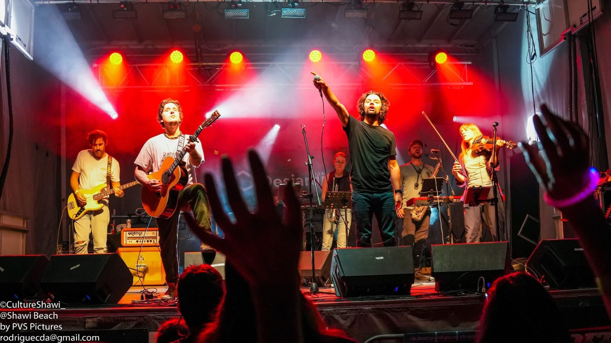

<style>
  .fn-beloeil-2026 {
    --fn-blue: #004f79;
    --fn-yellow: #ffd025;
    --fn-orange: #f3732e;
    --fn-green: #43b549;
    --fn-sky: #00a1e1;
    --fn-ink: #17242d;
    --fn-muted: #5b6a73;
    --fn-soft: #f2f6f8;
    --fn-white: #ffffff;
    --fn-border: rgba(0, 79, 122, 0.2);
    --fn-width: min(1120px, calc(100vw - 40px));
    color: var(--fn-ink);
    font-family: Gotham, Montserrat, Avenir, "Helvetica Neue", Arial, sans-serif;
    line-height: 1.5;
  }

  .fn-beloeil-2026 *,
  .fn-beloeil-2026 *::before,
  .fn-beloeil-2026 *::after {
    box-sizing: border-box;
  }

  .fn-beloeil-2026 a {
    color: inherit;
  }

  .fn-beloeil-2026 img {
    display: block;
    max-width: 100%;
  }

  .fn-beloeil-2026 .fn-full {
    width: 100vw;
    margin-right: calc(50% - 50vw);
    margin-left: calc(50% - 50vw);
  }

  .fn-beloeil-2026 .fn-wrap {
    width: var(--fn-width);
    margin: 0 auto;
  }

  .fn-beloeil-2026 h1,
  .fn-beloeil-2026 h2,
  .fn-beloeil-2026 h3,
  .fn-beloeil-2026 p {
    margin-top: 0;
  }

  .fn-beloeil-2026 h1 {
    max-width: 10ch;
    margin-bottom: 24px;
    color: var(--fn-white);
    font-size: clamp(3.2rem, 11vw, 8.2rem);
    font-weight: 800;
    line-height: 0.92;
  }

  .fn-beloeil-2026 h2 {
    margin-bottom: 26px;
    color: var(--fn-blue);
    font-size: clamp(2.15rem, 5.5vw, 4.6rem);
    font-weight: 800;
    line-height: 0.98;
  }

  .fn-beloeil-2026 h3 {
    margin-bottom: 12px;
    color: var(--fn-ink);
    font-size: clamp(1.25rem, 2.3vw, 1.9rem);
    font-weight: 800;
    line-height: 1.08;
  }

  .fn-beloeil-2026 p {
    color: var(--fn-muted);
    font-size: 1.05rem;
  }

  .fn-beloeil-2026 .fn-hero {
    position: relative;
    min-height: min(760px, 92svh);
    display: grid;
    align-items: end;
    overflow: hidden;
    isolation: isolate;
    background: var(--fn-blue);
  }

  .fn-beloeil-2026 .fn-hero::before {
    content: "";
    position: absolute;
    inset: 0;
    z-index: -2;
    background-image: url("assets/images/joyeux-calvaire/joyeux_calvaire4.jpg");
    background-position: center;
    background-size: cover;
    transform: scale(1.02);
    transition: transform 700ms ease;
  }

  .fn-beloeil-2026 .fn-hero::after {
    content: "";
    position: absolute;
    inset: 0;
    z-index: -1;
    background:
      linear-gradient(90deg, rgba(0, 31, 48, 0.93) 0%, rgba(0, 65, 98, 0.72) 42%, rgba(0, 0, 0, 0.14) 100%),
      linear-gradient(0deg, rgba(0, 0, 0, 0.6) 0%, rgba(0, 0, 0, 0) 48%);
  }

  .fn-beloeil-2026 .fn-hero:hover::before {
    transform: scale(1.045);
  }

  .fn-beloeil-2026 .fn-hero-inner {
    width: var(--fn-width);
    margin: 0 auto;
    padding: clamp(72px, 12vw, 132px) 0 clamp(44px, 8vw, 92px);
  }

  .fn-beloeil-2026 .fn-hero-copy {
    max-width: 720px;
  }

  .fn-beloeil-2026 .fn-kicker,
  .fn-beloeil-2026 .fn-eyebrow {
    margin-bottom: 14px;
    color: var(--fn-orange);
    font-size: 0.86rem;
    font-weight: 800;
    letter-spacing: 0.08em;
    text-transform: uppercase;
  }

  .fn-beloeil-2026 .fn-hero .fn-kicker {
    color: var(--fn-yellow);
  }

  .fn-beloeil-2026 .fn-hero p {
    max-width: 620px;
    color: rgba(255, 255, 255, 0.92);
    font-size: clamp(1.08rem, 2vw, 1.3rem);
  }

  .fn-beloeil-2026 .fn-actions {
    display: flex;
    flex-wrap: wrap;
    gap: 14px;
    margin-top: 30px;
  }

  .fn-beloeil-2026 .fn-button {
    display: inline-flex;
    align-items: center;
    justify-content: center;
    min-height: 48px;
    padding: 0 22px;
    color: var(--fn-blue);
    background: var(--fn-yellow);
    border: 2px solid var(--fn-yellow);
    border-radius: 0;
    font-weight: 800;
    text-decoration: none;
    transition: background 180ms ease, color 180ms ease, transform 180ms ease;
  }

  .fn-beloeil-2026 .fn-button:hover,
  .fn-beloeil-2026 .fn-button:focus-visible {
    background: var(--fn-white);
    color: var(--fn-blue);
    transform: translateY(-2px);
  }

  .fn-beloeil-2026 .fn-button-secondary {
    color: var(--fn-white);
    background: transparent;
    border-color: rgba(255, 255, 255, 0.72);
  }

  .fn-beloeil-2026 .fn-section {
    padding: clamp(58px, 9vw, 104px) 0;
  }

  .fn-beloeil-2026 .fn-section-soft {
    background: var(--fn-soft);
  }

  .fn-beloeil-2026 .fn-intro {
    display: grid;
    grid-template-columns: minmax(0, 0.9fr) minmax(0, 1.1fr);
    gap: clamp(28px, 6vw, 72px);
    align-items: start;
  }

  .fn-beloeil-2026 .fn-lead {
    margin-bottom: 0;
    color: var(--fn-ink);
    font-size: clamp(1.35rem, 3vw, 2.35rem);
    font-weight: 800;
    line-height: 1.12;
  }

  .fn-beloeil-2026 .fn-facts {
    display: grid;
    gap: 18px;
  }

  .fn-beloeil-2026 .fn-fact {
    display: grid;
    grid-template-columns: 130px 1fr;
    gap: 20px;
    padding-bottom: 18px;
    border-bottom: 1px solid var(--fn-border);
  }

  .fn-beloeil-2026 .fn-fact strong {
    color: var(--fn-blue);
    font-size: 0.86rem;
    text-transform: uppercase;
  }

  .fn-beloeil-2026 .fn-fact span {
    color: var(--fn-ink);
    font-size: 1.05rem;
  }

  .fn-beloeil-2026 .fn-program {
    display: grid;
    gap: 34px;
  }

  .fn-beloeil-2026 .fn-day {
    display: grid;
    grid-template-columns: minmax(180px, 0.34fr) minmax(0, 1fr);
    gap: clamp(22px, 5vw, 72px);
    padding: clamp(26px, 5vw, 52px) 0;
    border-top: 2px solid var(--fn-border);
  }

  .fn-beloeil-2026 .fn-day:last-child {
    border-bottom: 2px solid var(--fn-border);
  }

  .fn-beloeil-2026 .fn-date {
    color: var(--fn-blue);
    font-size: clamp(2rem, 6vw, 4rem);
    font-weight: 800;
    line-height: 0.95;
  }

  .fn-beloeil-2026 .fn-place {
    display: block;
    margin-top: 14px;
    color: var(--fn-muted);
    font-size: 1rem;
    font-weight: 800;
  }

  .fn-beloeil-2026 .fn-events {
    display: grid;
    gap: 18px;
  }

  .fn-beloeil-2026 .fn-event {
    display: grid;
    grid-template-columns: 90px 1fr;
    gap: 22px;
    align-items: start;
  }

  .fn-beloeil-2026 .fn-time {
    color: var(--fn-orange);
    font-size: 1.12rem;
    font-weight: 800;
  }

  .fn-beloeil-2026 .fn-event p {
    margin-bottom: 0;
  }

  .fn-beloeil-2026 .fn-artist {
    display: grid;
    grid-template-columns: minmax(0, 1.05fr) minmax(300px, 0.95fr);
    gap: clamp(30px, 6vw, 74px);
    align-items: center;
  }

  .fn-beloeil-2026 .fn-artist img {
    width: 100%;
    aspect-ratio: 4 / 5;
    object-fit: cover;
    object-position: center;
    transition: transform 260ms ease, filter 260ms ease;
  }

  .fn-beloeil-2026 .fn-artist img:hover {
    filter: saturate(1.08);
    transform: translateY(-4px);
  }

  .fn-beloeil-2026 .fn-practical {
    display: grid;
    grid-template-columns: repeat(3, minmax(0, 1fr));
    gap: 1px;
    background: var(--fn-border);
    border: 1px solid var(--fn-border);
  }

  .fn-beloeil-2026 .fn-practical-item {
    min-height: 180px;
    padding: clamp(22px, 4vw, 34px);
    background: var(--fn-white);
  }

  .fn-beloeil-2026 .fn-practical-item h3 {
    color: var(--fn-blue);
    font-size: 1.25rem;
  }

  .fn-beloeil-2026 .fn-partners {
    display: grid;
    grid-template-columns: minmax(0, 0.8fr) minmax(0, 1.2fr);
    gap: clamp(30px, 6vw, 72px);
    align-items: start;
  }

  .fn-beloeil-2026 .fn-logo-grid {
    display: grid;
    grid-template-columns: repeat(3, minmax(0, 1fr));
    gap: 22px 28px;
    align-items: center;
  }

  .fn-beloeil-2026 .fn-logo-grid img {
    width: 100%;
    max-height: 78px;
    object-fit: contain;
    filter: grayscale(1);
    opacity: 0.86;
    transition: filter 180ms ease, opacity 180ms ease, transform 180ms ease;
  }

  .fn-beloeil-2026 .fn-logo-grid img:hover {
    filter: grayscale(0);
    opacity: 1;
    transform: translateY(-2px);
  }

  .fn-beloeil-2026 .fn-partner-list {
    margin: 26px 0 0;
    padding: 0;
    color: var(--fn-muted);
    list-style: none;
    columns: 2;
    column-gap: 28px;
  }

  .fn-beloeil-2026 .fn-partner-list li {
    break-inside: avoid;
    margin-bottom: 8px;
  }

  .fn-beloeil-2026 .fn-final {
    color: var(--fn-white);
    background: var(--fn-blue);
  }

  .fn-beloeil-2026 .fn-final h2,
  .fn-beloeil-2026 .fn-final p {
    color: var(--fn-white);
  }

  .fn-beloeil-2026 .fn-final p {
    max-width: 680px;
  }

  @media (max-width: 820px) {
    .fn-beloeil-2026 .fn-hero {
      min-height: 82svh;
    }

    .fn-beloeil-2026 .fn-hero::before {
      background-position: 58% center;
    }

    .fn-beloeil-2026 .fn-intro,
    .fn-beloeil-2026 .fn-day,
    .fn-beloeil-2026 .fn-artist,
    .fn-beloeil-2026 .fn-partners {
      grid-template-columns: 1fr;
    }

    .fn-beloeil-2026 .fn-practical {
      grid-template-columns: 1fr;
    }

    .fn-beloeil-2026 .fn-logo-grid {
      grid-template-columns: repeat(2, minmax(0, 1fr));
    }
  }

  @media (max-width: 560px) {
    .fn-beloeil-2026 {
      --fn-width: min(100% - 28px, 1120px);
    }

    .fn-beloeil-2026 h1 {
      font-size: clamp(3rem, 18vw, 4.4rem);
    }

    .fn-beloeil-2026 .fn-actions,
    .fn-beloeil-2026 .fn-button {
      width: 100%;
    }

    .fn-beloeil-2026 .fn-fact,
    .fn-beloeil-2026 .fn-event {
      grid-template-columns: 1fr;
      gap: 6px;
    }

    .fn-beloeil-2026 .fn-partner-list {
      columns: 1;
    }
  }
</style>

<section class="fn-beloeil-2026" aria-labelledby="fn-title">
  <!-- WordPress : remplacer les chemins assets/... par les URLs de la médiathèque. -->
  <div class="fn-hero fn-full">
    <div class="fn-hero-inner">
      <div class="fn-hero-copy">
        <p class="fn-kicker">Beloeil | 23 et 24 juin 2026</p>
        <h1 id="fn-title">Fête nationale à Beloeil</h1>
        <p>
          Deux jours de festivités au Vieux-Beloeil et au parc du Petit-Rapide :
          animations, activités familiales, feux d’artifice et spectacle de
          Joyeux Calvaire en hommage aux Cowboys Fringants.
        </p>
        <div class="fn-actions">
          <a class="fn-button" href="#fn-programmation">Voir la programmation</a>
          <a class="fn-button fn-button-secondary" href="https://beloeil.ca/fete-nationale/">Plus d’information</a>
        </div>
      </div>
    </div>
  </div>

  <div class="fn-section">
    <div class="fn-wrap fn-intro">
      <p class="fn-lead">
        Un rendez-vous rassembleur pour célébrer la culture québécoise, la musique
        et les moments en famille au cœur de Beloeil.
      </p>
      <div class="fn-facts" aria-label="Résumé de l'événement">
        <div class="fn-fact">
          <strong>Dates</strong>
          <span>23 juin, de 20 h à 23 h, et 24 juin, de 14 h à 19 h.</span>
        </div>
        <div class="fn-fact">
          <strong>Lieux</strong>
          <span>Vieux-Beloeil le 23 juin, puis parc du Petit-Rapide le 24 juin.</span>
        </div>
        <div class="fn-fact">
          <strong>À prévoir</strong>
          <span>Apportez vos maillots ou vêtements de rechange pour les activités d’eau.</span>
        </div>
      </div>
    </div>
  </div>

  <div id="fn-programmation" class="fn-section fn-section-soft">
    <div class="fn-wrap">
      <h2>Programmation</h2>
      <div class="fn-program">
        <article class="fn-day">
          <div>
            <div class="fn-date">23 juin</div>
            <span class="fn-place">Vieux-Beloeil</span>
          </div>
          <div class="fn-events">
            <div class="fn-event">
              <strong class="fn-time">20 h</strong>
              <p>Animations de rue et musique d’ambiance.</p>
            </div>
            <div class="fn-event">
              <strong class="fn-time">22 h</strong>
              <p>Feux d’artifice en partenariat avec la Ville de Mont-Saint-Hilaire.</p>
            </div>
          </div>
        </article>

        <article class="fn-day">
          <div>
            <div class="fn-date">24 juin</div>
            <span class="fn-place">parc du Petit-Rapide</span>
          </div>
          <div class="fn-events">
            <div class="fn-event">
              <strong class="fn-time">14 h à 19 h</strong>
              <p>Mur d’escalade, trampolines, jeux gonflables d’eau, plage de mousse, jeux, animations, organismes, ateliers culturels et maquillage.</p>
            </div>
            <div class="fn-event">
              <strong class="fn-time">17 h</strong>
              <p>Discours patriotique et spectacle de Joyeux Calvaire.</p>
            </div>
          </div>
        </article>
      </div>
    </div>
  </div>

  <div class="fn-section">
    <div class="fn-wrap fn-artist">
      <div>
        <p class="fn-eyebrow">Spectacle</p>
        <h2>Joyeux Calvaire</h2>
        <p>
          Le groupe propose un hommage festif aux Cowboys Fringants, avec l’énergie
          d’un grand rassemblement populaire. Le spectacle suivra le discours
          patriotique du 24 juin au parc du Petit-Rapide.
        </p>
      </div>
      
    </div>
  </div>

  <div class="fn-section fn-section-soft">
    <div class="fn-wrap">
      <h2>Infos pratiques</h2>
      <div class="fn-practical">
        <div class="fn-practical-item">
          <h3>Activités d’eau</h3>
          <p>Des jeux gonflables d’eau et une plage de mousse sont prévus. Les maillots ou vêtements de rechange sont recommandés.</p>
        </div>
        <div class="fn-practical-item">
          <h3>Sur place</h3>
          <p>Des kiosques alimentaires et des rafraîchissements seront disponibles pendant l’événement.</p>
        </div>
        <div class="fn-practical-item">
          <h3>Information</h3>
          <p>Consultez le site Web de la Ville pour les mises à jour avant votre visite.</p>
        </div>
      </div>
    </div>
  </div>

  <div class="fn-section">
    <div class="fn-wrap fn-partners">
      <div>
        <p class="fn-eyebrow">Merci à nos partenaires</p>
        <h2>Une fête portée par le milieu</h2>
        <p>
          La programmation est rendue possible grâce à la collaboration de partenaires
          publics, communautaires et privés.
        </p>
      </div>
      <div>
        <div class="fn-logo-grid" aria-label="Logos des partenaires disponibles">
          
          
          
        </div>
        <ul class="fn-partner-list">
          <li>Hydro-Québec</li>
          <li>Gouvernement du Québec</li>
          <li>Société Saint-Jean-Baptiste</li>
          <li>Mouvement national des Québécoises et Québécois</li>
          <li>Ville de Mont-Saint-Hilaire</li>
          <li>VR St-Cyr</li>
          <li>Mathieu Carrière RE/MAX</li>
          <li>Simon Jolin-Barrette</li>
        </ul>
      </div>
    </div>
  </div>

  <div class="fn-section fn-final fn-full">
    <div class="fn-wrap">
      <h2>Préparez votre visite</h2>
      <p>
        Consultez la page officielle pour les mises à jour, les détails logistiques
        et toute information ajoutée avant l’événement.
      </p>
      <div class="fn-actions">
        <a class="fn-button" href="https://beloeil.ca/fete-nationale/">beloeil.ca/fete-nationale</a>
      </div>
    </div>
  </div>
</section>
